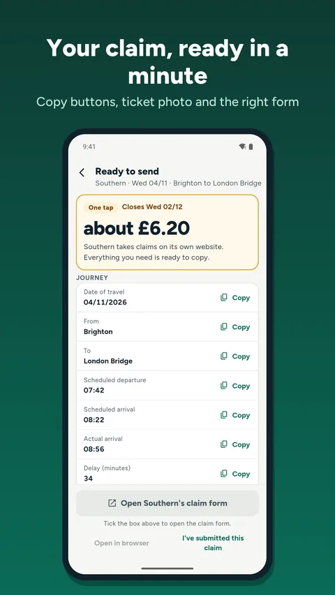

Independent app. FareBack is made by Kodfu Bilisim. It is not affiliated with or endorsed by any train company, National Rail, Network Rail, Rail Delivery Group, Great British Railways or the Department for Transport. You submit every claim yourself; the train company decides whether to pay.
Delay Repay claim rejected or underpaid? How to challenge it
Train companies get claims wrong: the wrong train, the wrong band, a ticket they say they can’t read. You can challenge the decision in three steps, ending with the Rail Ombudsman, which is free and whose decision binds the train company if you accept it. Below are the steps, the timings and a letter you can copy.
Checked 28/11/2026 against the Office of Rail and Road’s Complaints Code of Practice, the Rail Ombudsman and the National Rail Conditions of Travel (edition from 30/07/2026). General information, not legal advice.
On this page
Why claims are rejected, and what to check
| Reason given | What to check |
|---|---|
| “The train was not delayed enough” | The delay is measured at your destination, against the timetable in force that day. A missed connection counts. Check the arrival time on National Rail data or a real-time train site. |
| “Wrong train” | Claims are for the train you planned to catch (Conditions of Travel 33.1). If you gave the train you ended up on, say which one you intended to use. |
| “Ticket not valid / not readable” | Send a clear image with the ticket number, journey and price. Split tickets: send every ticket (14.2 allows them). |
| “Outside the claim window” | Check the company’s wording: from travel, from the delay, or received by. If you claimed in time, show the date you submitted. |
| “Cause outside our control” | For 60 minutes or more, compensation is due regardless of fault (32.1). Below 60 minutes, the company must point to an exclusion in its Passenger’s Charter (33.4). |
| Paid less than expected | Check the band, whether it used the single or return fare, and for seasons the divisor (464, 40, 10, Flexi 16). Ask for the calculation. |
The three steps
- Ask the train company to review the decision. Most companies have an appeal button in the claim site or decision email; some ask you to reply by email. Explain why the decision is wrong and attach your evidence. Links for each company are in our train company guides.
- Make a formal complaint if the review does not fix it. Under the Office of Rail and Road’s Complaints Code of Practice, train companies must give a full response to at least 95% of complaints within 20 working days, and update you every 10 working days if they can’t. Keep the complaint reference and dates.
- Go to the Rail Ombudsman if you are still unhappy after the company’s final response (sometimes called a deadlock letter), or if 40 working days have passed since the company received your complaint. You must apply within 12 months of the final response. It is free. Read our Rail Ombudsman guide.
Note the dates as you go: the day you claimed, the decision, your review request, the complaint and each reply.
Template letter you can copy
Copy it into the company’s review form, complaint form or email, and replace the parts in brackets. Keep it factual.
Subject: Request to review Delay Repay claim [claim reference]
Dear [train company] Customer Relations,
I am asking you to review your decision on my Delay Repay claim [claim reference], made on [date of claim], which was [rejected / paid £X].
Journey: [date], from [station] to [station]. I planned to catch the [hh:mm] service, due to arrive at [hh:mm]. I arrived at [destination] at [hh:mm], [N] minutes late. [If relevant: the delay to the [hh:mm] service made me miss my connection at [station].]
Ticket: [single / return / season / split tickets], [ticket number or reference], price £[amount]. A copy is attached.
Under your Delay Repay scheme a delay of [N] minutes is in the [band] band, which pays [percentage] of [the fare / the journey value], £[amount]. [Then the reason the decision is wrong, for example: The delay is measured at my destination against the timetable in force that day (National Rail Conditions of Travel 32.1 and 33.1). / My split tickets were valid for the whole journey (Conditions of Travel 14.2). / The delay was over 60 minutes, so compensation is due regardless of cause (32.1).]
Please pay £[amount] [by bank transfer / to my card], or send me a full explanation of how you reached your decision. If we cannot resolve this, please treat this as a formal complaint and send me your final response, so that I can refer it to the Rail Ombudsman if needed.
Yours faithfully,
[Name]
[Email or address]
Evidence that wins
- The real arrival time. National Rail data shows scheduled and actual times; note the source and time you checked.
- Your ticket, clearly showing the ticket number, journey and price; every ticket for split tickets; the season ticket and photocard or smartcard number.
- The planned trains from a journey planner, which also shows you left enough time to connect (Conditions of Travel 20).
- The company’s own rules, quoted from its Delay Repay page or Passenger’s Charter.
- Dates and references for the claim, the decision and every message.
Before you accept a lower offer
The Rail Ombudsman cannot look at a case where you have already accepted a decision or offer made by the train company. If you think a payment is too low, challenge it before accepting it as a final settlement.
Beyond Delay Repay, costs such as a taxi or a missed flight are at the company’s discretion (Conditions of Travel 32.2) or a claim under the Consumer Rights Act 2015. The Ombudsman does not handle business losses or claims over £2,500; larger claims go through the courts.
Rejected claim questions
How long does a train company have to answer a complaint?
Under the Office of Rail and Road’s Complaints Code of Practice, train companies must give a full response to at least 95% of complaints within 20 working days, with updates every 10 working days if they need longer.
When can I go to the Rail Ombudsman?
After the train company’s final response, or once 40 working days have passed since it received your complaint without a resolution, and within 12 months of the final response. It is free.
Can I appeal a Delay Repay decision?
Yes. Start with the company’s own review or appeal option, usually in the claim site or the decision email, then a formal complaint, then the Rail Ombudsman.
Let FareBack watch your trains
Save a journey and FareBack checks how late the train really arrived, using National Rail data, after it is due. If you can claim, you see the delay, the train company’s rule and an estimate, and your Claim Pack is ready: every detail with a copy button and a link to the right claim form. You submit the claim yourself, and every penny goes to you.



Free: up to 30 journeys a month checked, Claim Packs, reminders before the 28-day window closes, a claim tracker and a Delay Repay calculator for single, return and season tickets.
FareBack Pro, £1.99 a month or £12.99 a year (7-day free trial on annual): your commute checked every travel day, season ticket maths done for you, a 28-day look-back with a Claim Pack for every delay you can still claim, unlimited journeys and claim history export. Prices include VAT.
Android now; iPhone version not yet available. For train journeys in Great Britain. FareBack never takes a cut.
Where these facts come from
- Complaints Code of Practice (Office of Rail and Road, paragraphs 1.49 and 1.53)
- Know your rail rights (Office of Rail and Road)
- FAQ (Rail Ombudsman)
- National Rail Conditions of Travel (from 30/07/2026: 14.2, 20, 32, 33, 35)
Read on 28/11/2026. General information, not legal advice.